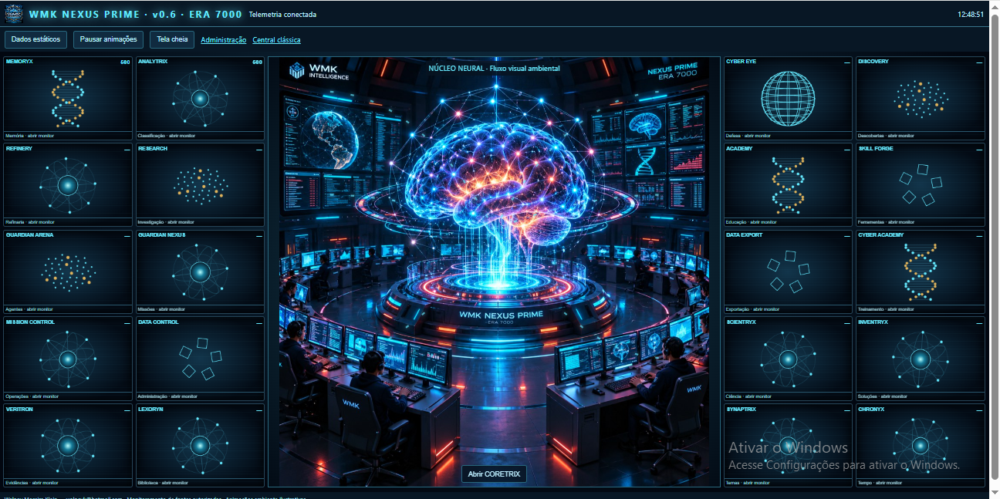

Autor: Walney Moreira Klein — walneyk@hotmail.com. Código MIT. Windows, Python 3.10+, sem Docker.
Baixe o ZIP, extraia em pasta nova, execute instalar.bat, depois carregar-demo.bat antes de iniciar.bat. A importação recusa banco já inicializado. Não apague seu banco existente: use outra cópia. Não ative coleta externa nesta demonstração. Abra http://127.0.0.1:8767. São 24 registros sintéticos em oito comunidades, sem autores reais nem links externos. Aguarde a indexação.
Use outra instalação limpa, sem importar a demonstração. Execute instalar.bat e iniciar.bat. Abra Administração, cadastro de agente Moltbook. Siga o manual detalhado de cadastro, e-mail e verificação X e a documentação oficial. As telas e regras podem mudar. Não compartilhe tokens, não duplique agentes para contornar limites.
MOLTBOOK_API_KEY=SUA_CHAVE GROQ_API_KEY=SUA_CHAVE_OPCIONAL
Edite apenas .env local e reinicie. Em Administração, selecione Moltbook e colete publicações. Na central clássica, configure coleta automática (10 a 1440 minutos). Mantenha servidor ativo. Para Ollama, inicie o serviço local e configure o modelo em .env.
Database Studio: /database-studio.html (consulte o menu se o caminho mudar). COGNITRYX: /cognitryx.html. MEMORYX: /memory.html. ANALYTRIX: /analytrix.html. BI: /operations.html. Cyber Eye: /radar.html. Consulte sem IA ou escolha Ollama/Groq. Groq envia trechos ao provedor; não envie dados sensíveis.
API REST e exemplos Python, Node.js, PHP e PowerShell · API COGNITRYX · Open Knowledge API · Exportação.
Invoke-RestMethod http://127.0.0.1:8767/api/v1/stats
Porta ocupada: encerre outra instância. 401: confira chave. 403: confira ativação e permissões. 429: aguarde o limite. Banco vazio: confira coleta ou importação. IA indisponível: use modo sem IA. Não publique .env, dados ou backups.
Dados reais somente após verificar autorização de redistribuição, licenças, privacidade e retenção. Não confunda MIT do código com licença de posts. Use amostra revisada, proveniência e manifesto de licença. A demonstração é sintética. Consulte política oficial.
Pesquisa híbrida, agente explorador periódico, biblioteca de descobertas com evidências, BI configurável, construtor de sites com API de leitura, catálogo de fontes e testes automatizados. Recursos planejados não são garantias de implementação.